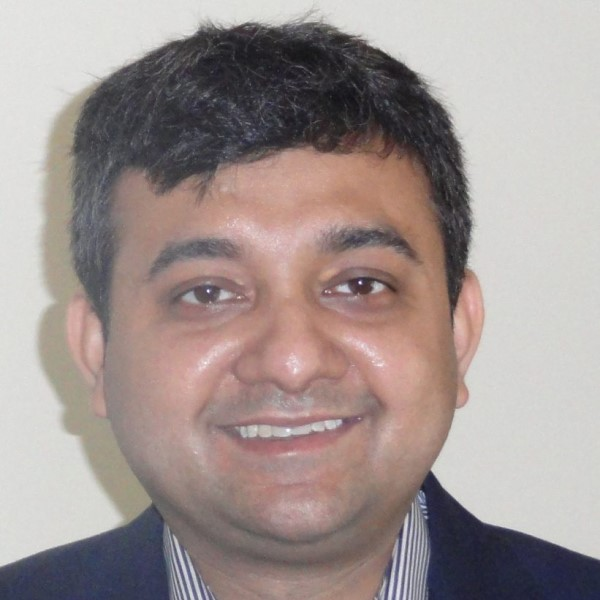
Prof. Saswata Bhattacharyya
Professor, Materials Science and Metallurgical Engineering, IIT Hyderabad.
Current members, former members and jointly supervised researchers. Explore their research and selected publications.
M³ Lab at IIT Hyderabad is jointly led by Prof. Saswata Bhattacharyya and Prof. Anuj Goyal.
Within M³ Lab, the CμMS Group (Computational Microstructure Modeling and Simulation) is led by Prof. Saswata Bhattacharyya. This website presents the work, people and activities of the CμMS Group.

Professor, Materials Science and Metallurgical Engineering, IIT Hyderabad.
Prof. Saswata Bhattacharyya acknowledges the teachers who shaped his academic life on his personal website.
Postdoctoral fellow, IIT Hyderabad. Previously a PhD student at IISc with Prof. Aloke Paul; external supervisor: Prof. Saswata Bhattacharyya.
Inverse diffusion modeling: connecting experimental diffusion profiles with composition-dependent transport coefficients through PINNs.
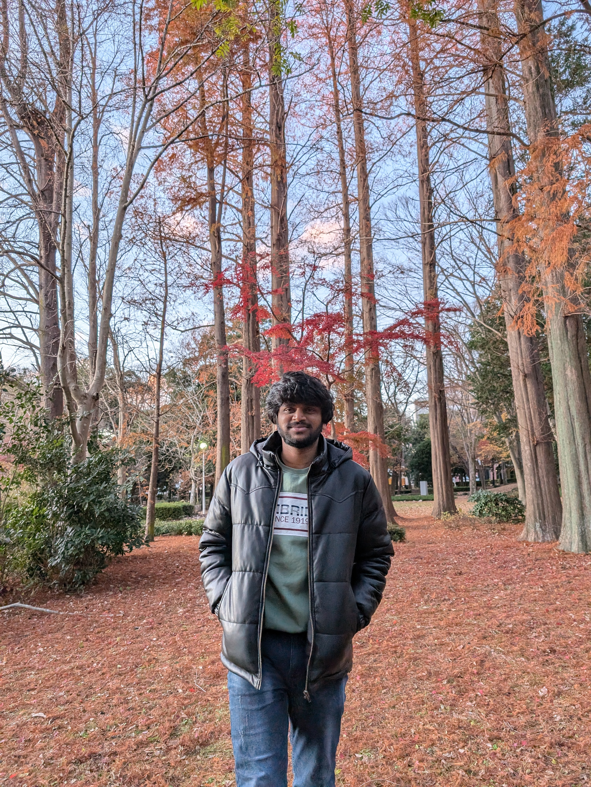
PhD student, IIT Hyderabad. Supervisor: Prof. Saswata Bhattacharyya.
Elasto-viscoplastic chemomechanical phase-field modeling of rafting in CMSX-4 class single-crystal nickel-base superalloys.
PhD student, IISc. Supervisor: Prof. Aloke Paul. External supervisor: Prof. Saswata Bhattacharyya.
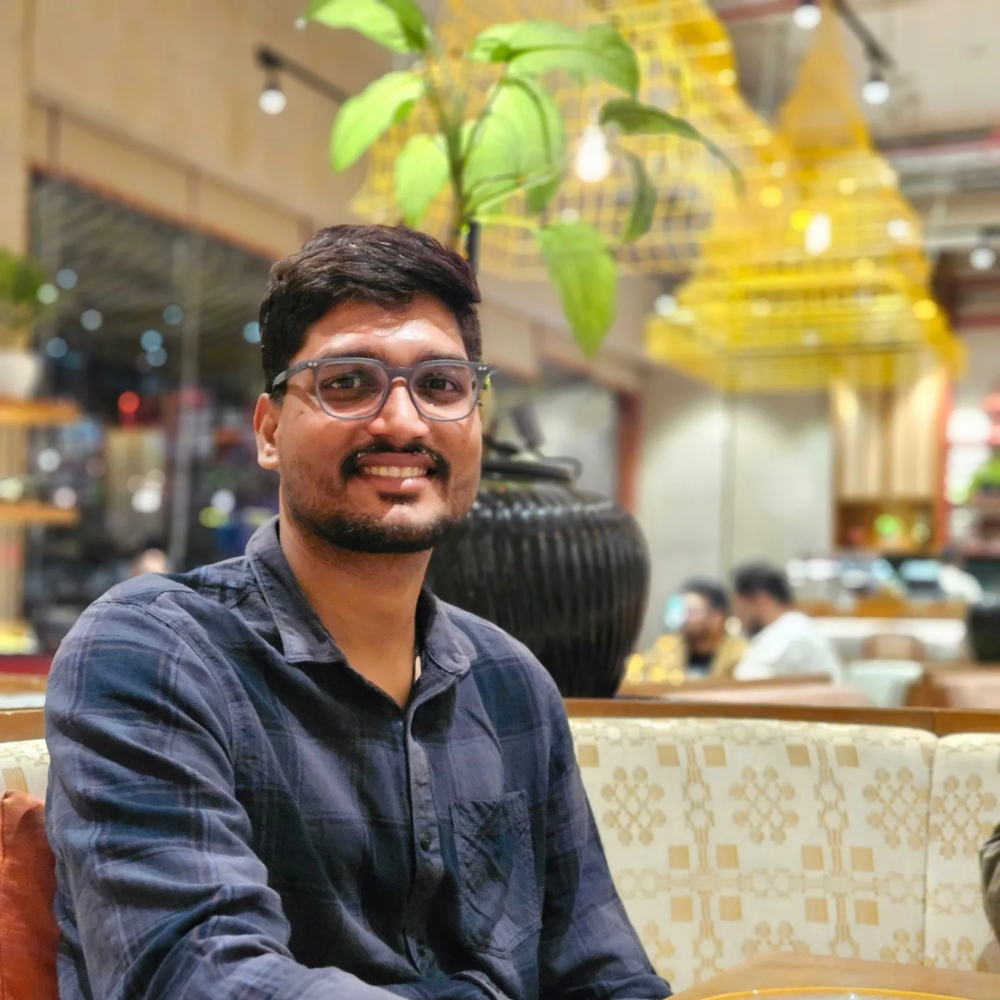
PhD student, IIT Hyderabad. Supervisor: Prof. Saswata Bhattacharyya.
Mechanism-guided phase-field design of post-processing heat treatments for additively manufactured Ti–6Al–4V.
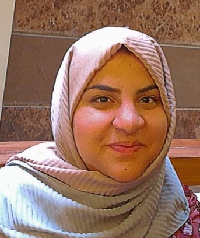
PhD student, IIT Hyderabad. Supervisors: Prof. Saswata Bhattacharyya and Prof. Ranjith Ramadurai.
Chemomechanical phase-field modeling and experiments on hafnia–zirconia ferroelectrics for non-volatile and neuromorphic memory devices.
Joint doctoral programme, IIT Hyderabad and Deakin University. Supervisors: Prof. Kishalay Mitra, Prof. Saswata Bhattacharyya, Prof. Bernie Rolfe and Prof. Santu Rana.
Multiscale surrogate models of process–structure linkages from phase-field simulations, including physics-informed neural operators.
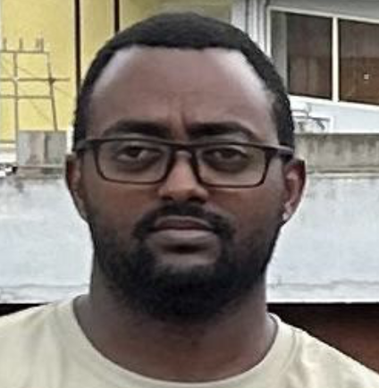
PhD student, IISc. Supervisor: Prof. Aloke Paul. External supervisor: Prof. Saswata Bhattacharyya.
Tracer diffusivity across alloy composition space, combining diffusion-couple experiments and PINN inversion.
PhD student, IIT Kanpur. Supervisor: Prof. Rajdip Mukherjee. External supervisor: Prof. Saswata Bhattacharyya.
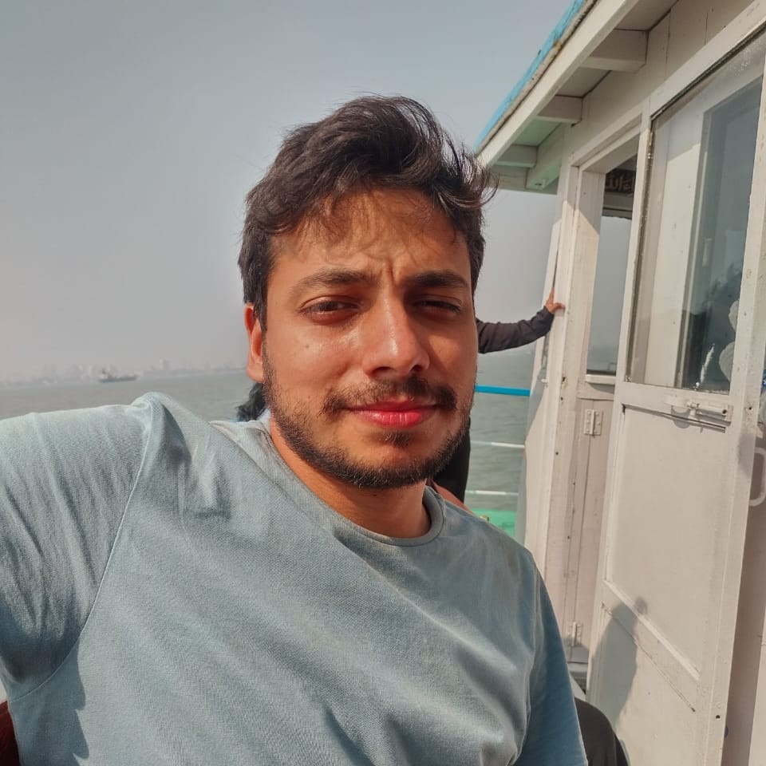
PhD student, IIT Bombay. Supervisor: Prof. M. P. Gururajan. External supervisor: Prof. Saswata Bhattacharyya.
Phase-field modeling of ferroelectric domain evolution using GPU computation.
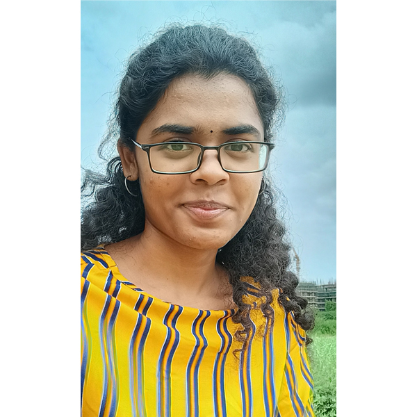
Joint PhD student, IIT Hyderabad. Supervisors: Prof. Ranjith Ramadurai and Prof. Saswata Bhattacharyya.
Ferroelectric domain switching and electromechanical coupling near the morphotropic phase region.
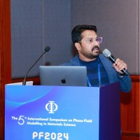
Research Professor, Kookmin University, South Korea.
PhD, 2019: elastic stress effects on phase separation in ternary alloys. His work connects misfit, elastic anisotropy and interactions between precipitates to microstructure evolution.
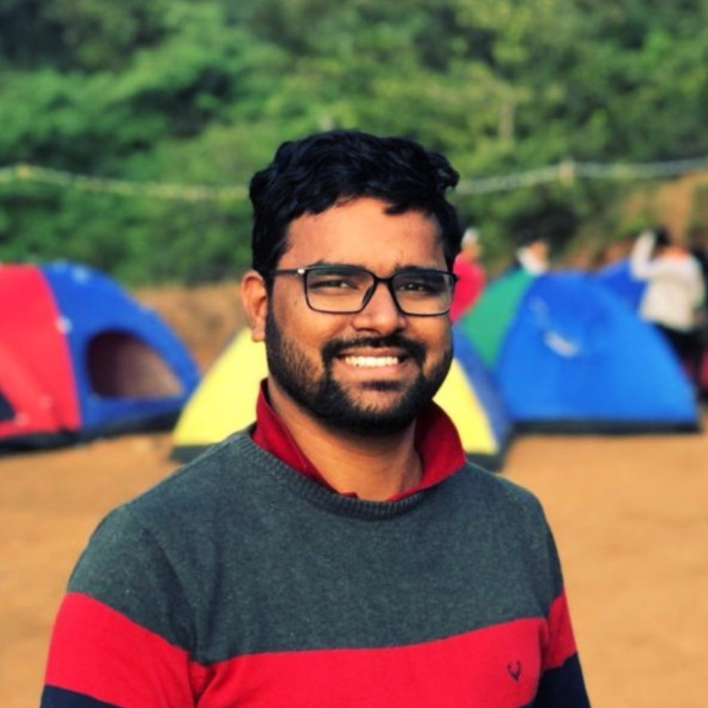
Postdoctoral researcher, Max Planck Institute for Sustainable Materials, Germany.
PhD, 2021: process–microstructure–property relations in model nickel-base superalloys, including interfacial dislocation networks and elastic effects.
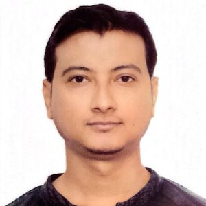
Postdoctoral Research Associate, University of Florida, USA.
PhD, 2021: electromechanical effects on domain evolution and polarization switching in bulk, thin-film and multilayer ferroelectric perovskite oxides.
Postdoctoral researcher, Kookmin University, South Korea. PhD jointly supervised with Prof. Subhradeep Chatterjee.
PhD, 2023: morphology development in bimetallic nanoparticles, including competition between core-shell and Janus structures.
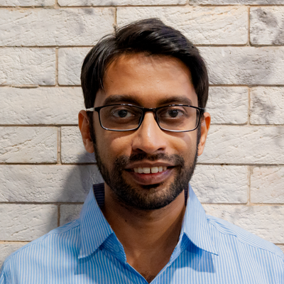
Assistant Professor, IIT Bhubaneswar. Former National Postdoctoral Fellow in the group.
Diffusion in multicomponent alloys and inverse estimation of diffusion coefficients using physics-informed methods.
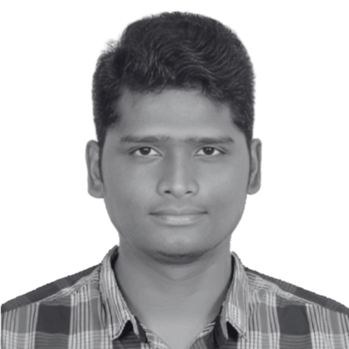
CEO, Metlattice Technologies.
PINN-based inverse diffusion methods and optimization of diffusion coefficients from experimental profiles.
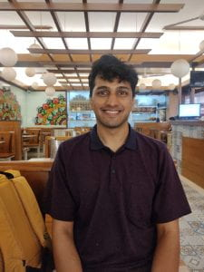
PhD candidate, Penn State University, USA, in the Chen Research Group.
Phase-field modeling of splitting instabilities in superalloys and contributions to microstructure simulation software.
PhD student, Georgia Institute of Technology, USA.
Accelerating coupled phase-field simulations using generative adversarial networks.
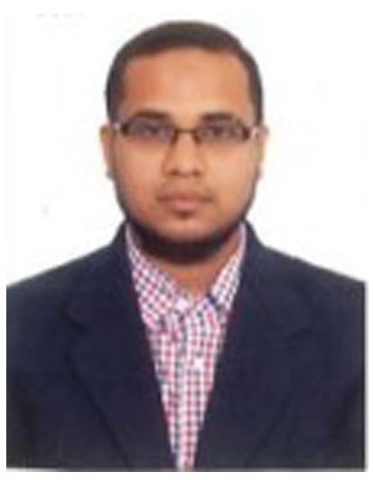
Senior Technical Superintendent, Materials Science and Metallurgical Engineering, IIT Hyderabad.
Manages the shared computing resources of M³ Lab, including Thermo-Calc and student servers, and helps members access the resources they need. His expertise spans system administration, network security, cloud infrastructure and cybersecurity incident response.